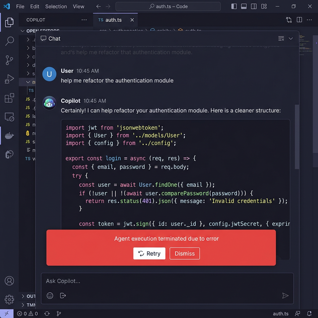

Agent terminated due to error
Tired of Claude Opus Dropping Out?
Getting Agent terminated due to error in Antigravity? Our proxy is purpose-built for long-lived AI connections — SSE streams, MCP tool calls, and multi-minute Claude Opus sessions.

Look familiar?
Long Connection Keep-Alive
10+ min timeout for SSE/WebSocket
Low Latency
<100ms to Anthropic API